2. AWS IoT基本設定¶
2.1. AWS マネジメントコンソールにログイン¶
まずは、下記のURLにアクセスして、アカウントID、ユーザー名、パスワードを入力しAWSマネージメントコンソールにサインインして下さい。
https://console.aws.amazon.com/
| 項目 | 値 |
|---|---|
| アカウント | AWSのアカウントID (12桁の数字) |
| ユーザー名 | IAMユーザー名 |
| パスワード | IAMユーザー パスワード |

2.2. デバイスの作成¶
AWSマネージメントコンソールを開き、右上のリージョン一覧から [米国東部(バージニア北部)]を選択します。

サービス一覧から[AWS IoT]をクリックして開きます。

AWS IoTのダッシュボードが表示されます。

下記の画面が表示された場合は、[Get started]をクリックします。
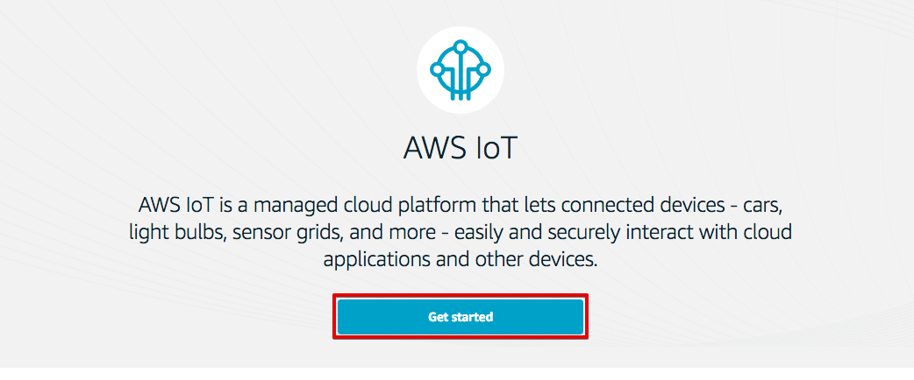デバイス(Thing)を作成します。メニューから[Registry]-[Things]をクリックします。以下の様な画面が表示された場合は、[Registry a thing]をクリックします。

あるいは、デバイス(Thing)一覧が表示された場合は、[Create]をクリックします。

[Name]に”ranger-gw-<参加者番号>”と入力し、[Create thing]をクリックします。
| 項目 | 値 |
|---|---|
| Name | ranger-gw-<参加者番号> |
[←]をクリックして下さい。
デバイス(Thing)一覧が表示され、作成したデバイスが表示されている事を確認します。
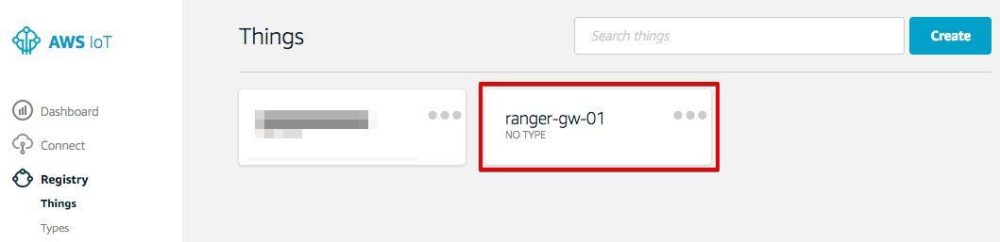メニューから[Settings]をクリックします。以下の様な画面が表示されます。 EndpointのURLが表示されます。このEndpointは、ゲートウェイがデータを送信する宛先になります。後ほどゲートウェイの設定のところで参照しますので、ノートパッドなどに記録しておいて下さい。

2.3. ポリシーの作成¶
デバイスに対して、AWS IoTの各種操作を許可するためのポリシーを作成します。メニューから[Security]-[Policies]をクリックします。以下の様な画面が表示された場合は、[Create a policy] をクリックします。

あるいは、ポリシー一覧が表示された場合は、[Create]をクリックします。
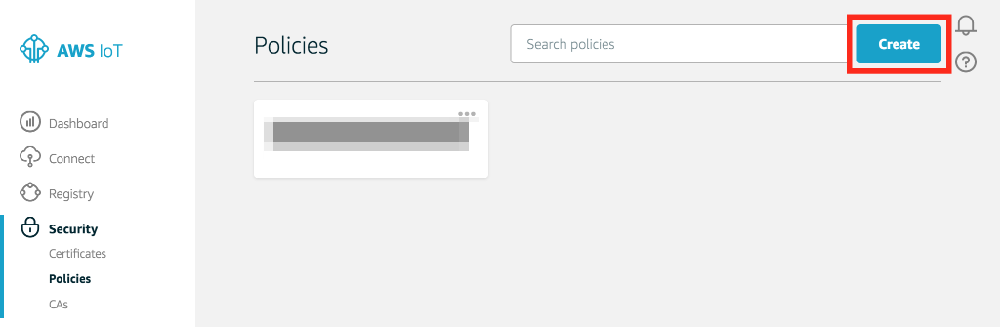フォームにそれぞれ以下のパラメータを入力し、[Create] をクリックします。
| 項目 | 値 |
|---|---|
| Name | awsiot-handson-policy-<参加者番号> |
| Action | iot:* |
| Resource ARN | * |
| Effect | Allow (チェックを入れて下さい) |
“*”は、半角の＊(アスタリスク)です。
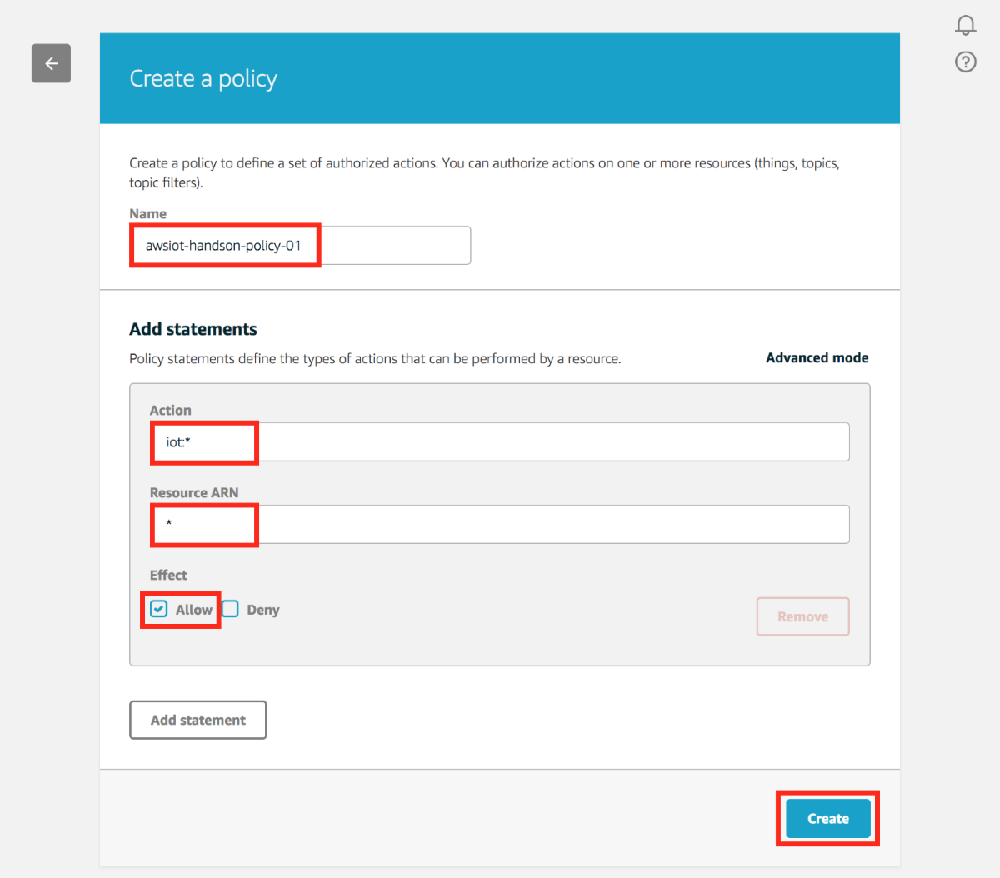[←]をクリックして下さい。
ポリシーの一覧が表示され、作成したポリシーが表示されている事を確認します。

2.4. 証明書の作成¶
証明書を作成します。メニューから[Security]-[Cetificate]をクリックします。以下の様な画面が表示された場合は、[Create a crtificate]をクリックします。

以下の様な画面が表示された場合は、[One-click certificate creation]右の[Create certificate]をクリックします。
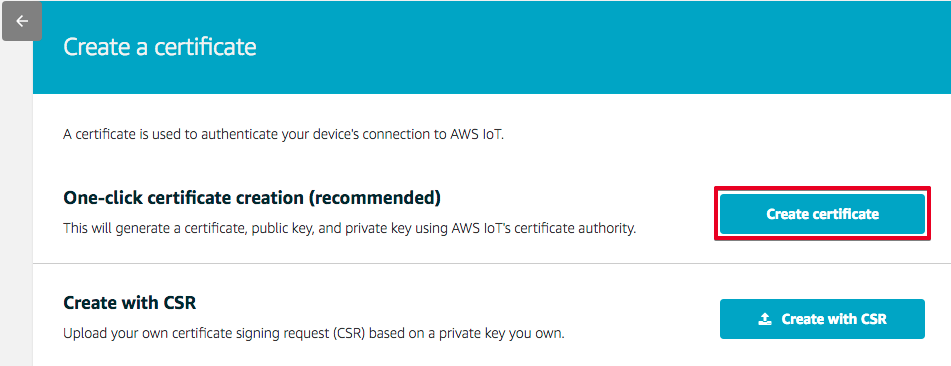下記の様に、”Certificate created!”と表示されたら、証明書(Certificate)とプライベートキー(Private key)をPCにダウンロードして下さい。各ファイルのサイズは、証明書が1,220バイト程度、プライベートキーが1,670バイト程度になります。
これらは、後ほど、BLEゲートウェイにアップロードします。証明書の番号は、後ほど証明書の割当てのところで参照しますので、ノートパッドなどに記録しておいて下さい。 証明書の番号とは、ファイル名が “xxxxxxxxxx-certificate.pem.crt” の場合、冒頭の “xxxxxxxxxx” になります。
証明書とプライベートキーのダウンロードが終わったら、[Activate] をクリックして証明書を有効にして下さい。
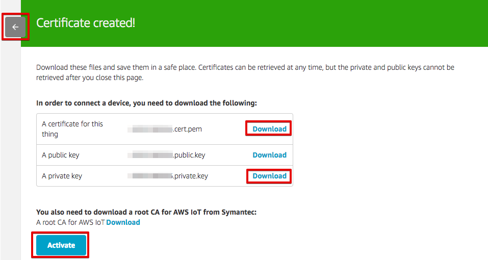最後に、左上の[←]を２回押して、戻って下さい。先ほど作成した証明書が表示され、”ACTIVATE” 状態になっている確認して下さい。
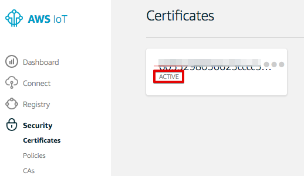2.5. デバイス、ポリシーを証明書に割当てる¶
作成したデバイス、ポリシーを証明書に割当てます。メニューから[Security]-[Certificates]をクリックします。証明書一覧から「証明書の作成」のセクションで保存した証明書のIDに一致する証明書をクリックして開きます。
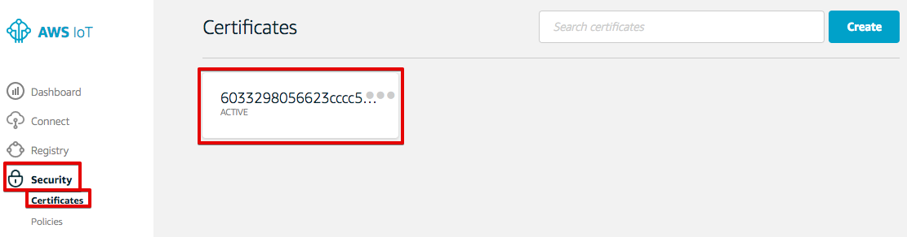証明書の詳細が表示されます。[Actions] - [Attach policy]を選択します。
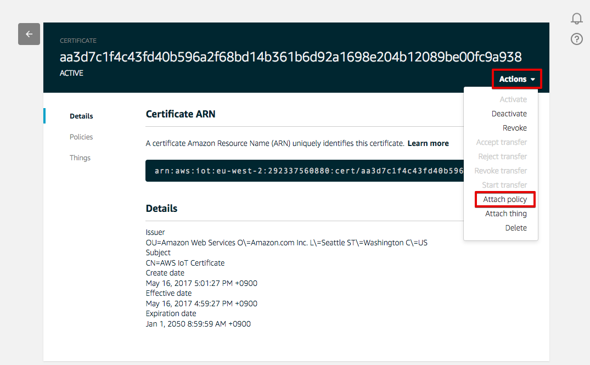”awsiot-handson-policy-<参加者番号>”を選択し、[Attach] をクリックします。
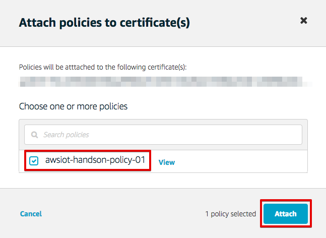[Actions] - [Attach thing]を選択します。
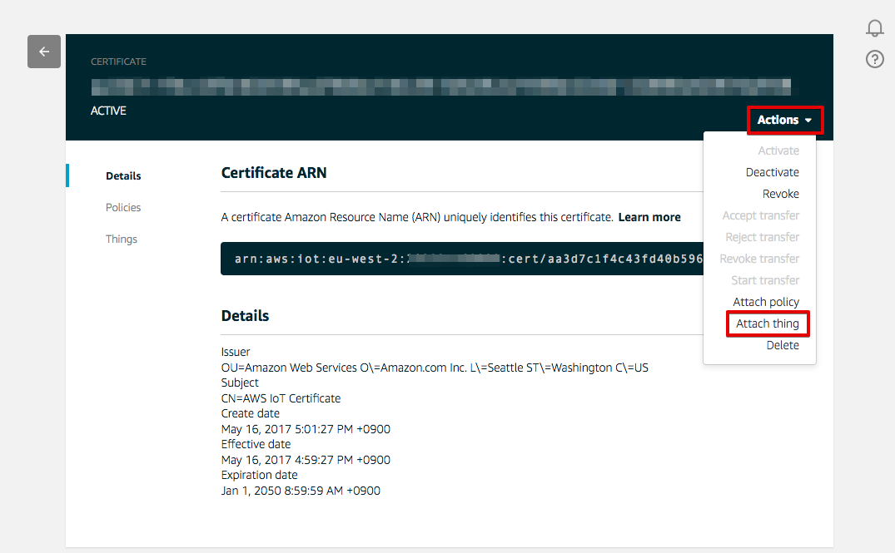“ranger-gw-<参加者番号>”を入力し、[Attach] をクリックします。
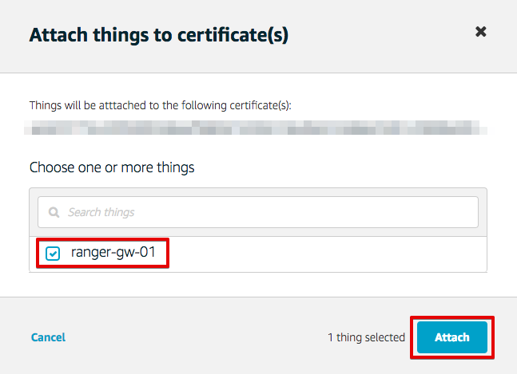これで、AWS IoTの基本設定は、終わりです。